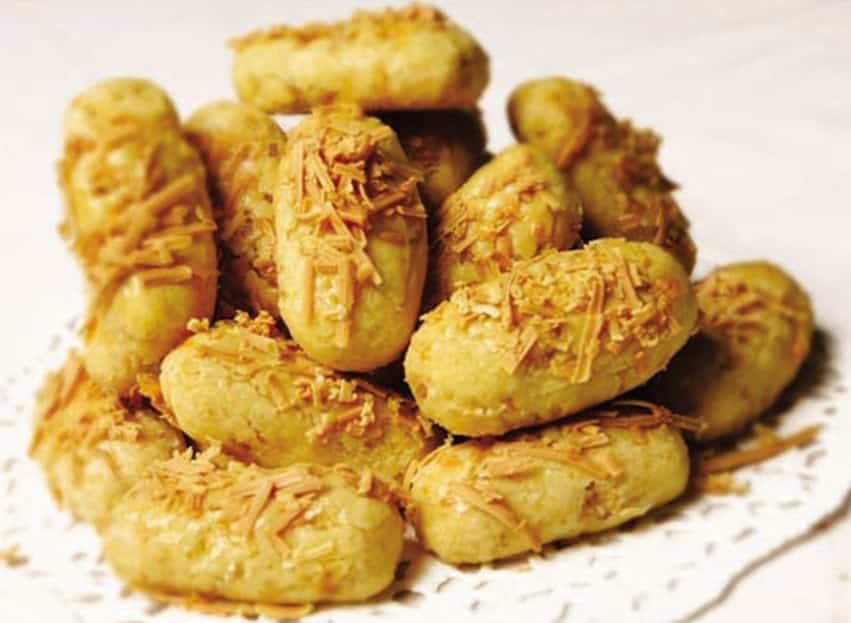

Resep kue kering Cheddar Cheese Kastengel

Bahan-Bahan:
- 100 gram butter
- 200 gram bakersmix (aku ganti royal palmia)
- 200 gram keju edam (aku ganti cheddar Meg)
- 375 gram tepung terigu protein rendah
- 25 gram maizena
- 2 sdm susu bubuk
- 2 butir kuning telur
- 1 sdm gula halus/tambahan dari aku
- 1/2 sdt garam
OLESAN DAN TABURAN :
- 2 kuning telur
- Secukupnya keju parut
Langkah-Langkah:
- Langkah 1 :
- Sebelum keju dipakai, angin-anginkan dahulu sampai agak kering. Aku kebetulan aku jemur sebentar ya.
- Langkah 2 :
- Ayak tepung terigu, susu bubuk dan maizena, sisihkan. Kocok butter dan margarin hingga sedikit lembut, lalu masukkan kuning telur, kocok lagi asal rata saja. Kemudian masukkan campuran tepung tadi, sedikit demi sedikit bergantian dengan keju parut. Aduk perlahan dengan spatula hingga adonan bisa dibentuk.
- Langkah 3 :
- Gilas adonan setebal 0,5-1 cm di atas alas plastik bersih atau alas lainnya.
- Langkah 4 :
- Rapikan pinggirnya agar potongannya rapi. Olesi dengan kuning telur, lalu taburi keju parut. Bisa ditekan/digilas asal dengan rolling agar keju menempel ya. Aku sendiri tanpa digilas karna suka yang begini.
- Langkah 5 :
- Potong kecil-kecil/menurut selera. Bisa juga pakai cetakan kastengel jika ada. Lalu tata dalam loyang.
- Langkah 6 :
- Setelah itu panggang dalam oven yang sudah dipanaskan sebelumnya. Gunakan api kecil, suhu oven sekitar 150 derajat/menyesuaikan dengan oven masing-masing.
- Langkah 7 :
- Setelah matang, angkat, keluarkan dari oven. Biarkan sampai hangat di atas loyang. Lalu anginkan, siap dikemas dalam toples.